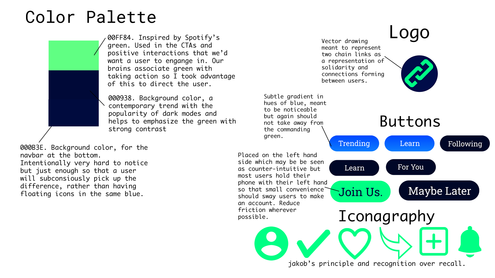

Kinect: A social platform for Creatives in Tech

View Prototype
Overview
This is a UI/UX design sprint, the challenge was to come up with a platform that would benefit everyone in the classroom. Instead of of the prompt to find a common problem amongst my peers via interviews, I made use of the information I already had, which is that fact that we all had the same major, Design & Technology. I then directed my interviews based on that fact. This allowed me to extend the reach of the app to students from other schools with similar majors and eventually creatives in general.
User Research
I found that generally, interviewees had knowledge of the terms and were able to describe them accurately, which was expected of the target group. Alot of users felt that the common association with their work was tied into the trending Metaverse and Crypto-currency topics. There was a divide between being excited over the fact this type of work is in increasing demand but the majority felt apathetic and their passion for the craft was unaffected by outside perspectives. Most interviewees believed that AR & VR technology would hold its relevance and that it's not just the current trend. Click here to see the questions asked.

Competitive Analysis
I could not find any direct competitors for this platform, which of course is part of why I was confident about the idea. The best comparisons I was able to draw were against LinkedIn, Adobe's Behance, an app for creatives from all walks & IGN the leading provider of video game, movie and tech related news. I also took a look at a few of the market place apps that my testing group disliked just to get broader insight. You can view those files here.
Style & Design Breakdown
Reflections
As all good User Interfaces should be, this is a work in progress. A breakdown of the typography element was intentionally omitted because going for contemporary aesthetics whilst choosing a serif font can be perceived as contradictory. Monospace fonts feel the most in tune with a futuristic, "techy" design but those can also be jarring and are best suited for desktops and laptops rather than smaller screens. I like the roboto choice because it is a system font which feels in place with the aforementioned "techy" feel however the slab serif roboto may be overused. I'm also considering a darker shade of blue in the background as to further emphasize the neon green, however black and neon green is quite a common combination in digital and tangible product design. The goal should always to be improved yet recognizable however I've gotten feedback that the contrast can be a bit jarring. The logo also closely resembles that of an existing yet non-competing company which is acceptable but never ideal. I'm currently working on the rest of the screens and revising the current style choices. As always, I'm open to informed feedback so if you have any suggestions drop me an email.